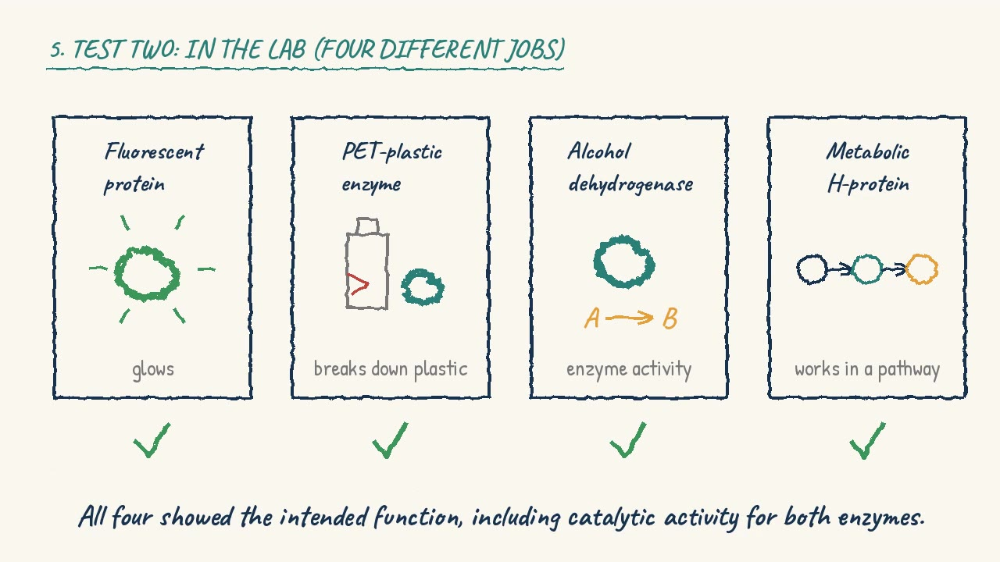

Fresh issue · Oct 27, 2026

Who builds the robots that run the lab
Live lab automation roles in engineering, software and the lab itself, what each rung asks for, and how people get in from the bench, the factory floor and code.
Read the issueBio × AI careers · every Tuesday and Saturday
Live roles with real pay, the skills each rung of the ladder asks for, and the week's biggest moves, from a scientist who has spent years at the bench.
Free. Two issues a week. Unsubscribe any time.
Fresh issue · Oct 27, 2026
Live lab automation roles in engineering, software and the lab itself, what each rung asks for, and how people get in from the bench, the factory floor and code.
Read the issuePaper of the week · Nature, Oct 21, 2026

Pinal turns a written description of a protein's job into candidate designs. Our hand-drawn explainer covers the hypothesis, what was tested and what it showed.
Watch the explainerEverything you need to move into bio×AI, in one place.
I'm Anupama Kozhiyalam, Anu. I've spent years making biology work at scale: high-cell-density fermentations, scale-ups from bench to pilot, a large production campaign at a CMO, and more analytical instruments than I can list. I've also translated scientists' protocols into robot-ready workflows at a lab-automation startup.
This newsletter covers the gap I've lived: between what AI-for-biology promises and what survives contact with a bioreactor, a QC lab or a batch record.
Read the full story